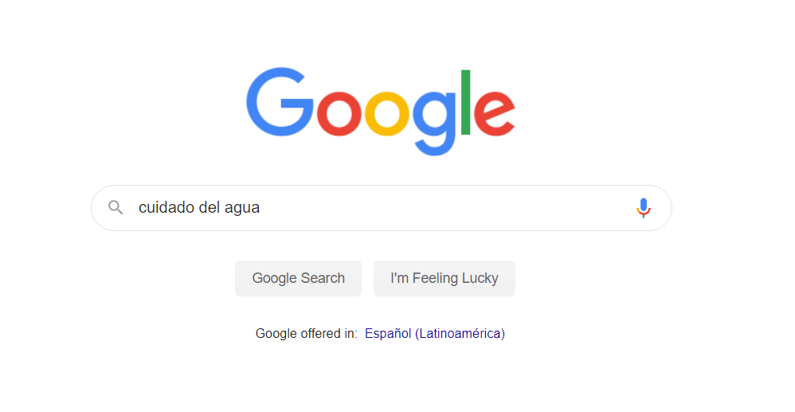

Tema 3. Buscando información en la Web
¿Qué son los motores de búsqueda?
El problema a resolver consiste en saber cómo y dónde encontrar lo que se necesita.
Con cientos de millones de páginas Web en línea parecería imposible y tardado localizar la información que se necesita; y la pregunta es ¿por dónde empezar?
Afortunadamente existen herramientas que hacen de viajar por Internet una tarea fácil, ya que permiten obtener información de cualquier parte del mundo; probablemente hemos oído hablar de estas herramientas con los nombres de Google, Yahoo, Altavista, etc. que son denominados "Buscadores o motores de búsqueda".
Los motores de búsqueda son las páginas más visitadas de la Red ya que constituyen el punto de partida para obtener cualquier información que se encuentre en Internet sobre un tema concreto.
Mencionábamos que existen diferentes buscadores, para razones de este curso aprenderemos a usar el buscador Google.
¿Ha escuchado hablar de él? Hoy en día es el buscador más utilizado por la facilidad y manejo de la información. Veamos por qué:
Ventajas del buscador
Una de las ventajas de este buscador es que su pantalla es muy simple. Tiene un cuadro de texto central donde se teclea lo que se desea buscar, el botón para iniciar la búsqueda Búsqueda en Google y algunas otras cosas más con nombres bastante descriptivos que irá conociendo en la práctica.
El éxito de Google ha sido por el estilo simple y claro que usa; antes los buscadores tenían unas pantallas con muchas opciones, publicidad, contenido basura.
Elementos de la pantalla del buscador
La pantalla de resultados de Google tiene 5 elementos principales.
| Entorno de búsqueda | Indica que se ha buscado en la web, pero también es posible buscar en imágenes, videos y noticias. Al final hay un enlace que dice más, el cual lleva a otros servicios como mapas, vuelos y finanzas. |
| Caja de búsqueda | Permite ingresar la palabra o palabras a buscar, o que fueron escritas en la primera pantalla, y de la cual está mostrando resultados |
| Datos de resultados | Muestra el total de resultados encontrados. |
| Líneas de resultados | Muestra el resultado de la búsqueda que está compuesto por varias líneas, en la primera aparece el título de la página Web encontrada. A continuación aparecen dos líneas que normalmente contienen fragmentos del texto de la página, diccionarios, enciclopedias, listas de editoriales y librerías españolas y en la última línea, en color verde, aparece la dirección o URL de la página encontrada. |
¿Cómo buscar información?
Es muy sencillo, siga estos pasos:
| 1 | Abra el navegador que va a utilizar. |
| 2 | Escriba en la barra de direcciones la dirección: www.google.com. Google detecta el idioma del sistema operativo y presenta la pantalla en ese idioma, por ejemplo, si el Sistema operativo Windows está en español, el buscador Google se abrirá en el idioma español. |
| 3 | Para iniciar la búsqueda debemos teclear sobre el cuadro de texto central la palabra o palabras a buscar.
En esta ocasión buscaremos algo acerca de "cuidado del agua"
 En este caso se escribieron dos palabras; cuando se escriben dos o más palabras, Google buscará páginas que incluyan todas las palabras que se hayan escrito. Va a encontrar páginas que tienen la palabra "cuidados" y "agua", o ambas palabras. |
| 4 | Una vez presionado el botón Buscar en Google, aparecerá la siguiente pantalla:
|
Al final de la pantalla de resultados aparece una línea con números que son las páginas de resultados que permiten navegar entre ellas. Se puede ir a la Siguiente página de resultados, a la Anterior, o directamente a un número de página de los que se muestran.
Para visitar una página de los resultados haga clic a una de las líneas de resultados que muestra el titulo de la página. Una vez que se dio click a esa liga lo llevara a la página encontrada y cada navegación será diferente porque las páginas nunca son diseñadas iguales.
¿Qué recomendaciones hay que seguir para realizar búsquedas?
Para que sus búsquedas a través de Google sean efectivas le invitamos a que considere las siguientes recomendaciones:
| 1. Busque sólo palabras completas |
Esto permitirá mejorar los resultados de búsqueda haciendo más precisa la búsqueda.
Ejemplo: si se introduce una palabra como "educa", Google no encontrará Educación, ya que buscará sólo palabras que contengan educa y no palabras que empiecen o terminen con educa. |
| 2. Busque palabras sueltas, no frases |
Google busca palabras, no frases con las palabras en el orden que las hemos escrito en la caja de búsqueda. Si quiere que busque una frase completa debe escribirla entre comillas dobles.
Ejemplo: "Cómo utilizar Internet" |
| 3. No importan acentos ni mayúsculas | Para Google todas las palabras son minúsculas sin importar los acentos. |
| 4. El país desde el que se busca importa | Ya que hay algunos resultados que deseamos encontrar que son únicamente validos dentro de un país como por ejemplo, páginas del gobierno de México. |
| 5. Corrector de errores tipográficos | Cuando se equivoca al teclear una palabra, Google suele mostrar una sugerencia con la palabra correcta. |
| 6. Traducción | Si busca palabras en Inglés desde Google en español (www.google.com.mx) se obtienen páginas en Inglés, pero con un enlace que dice: [traduzca esta página], por si se requiere traducir |